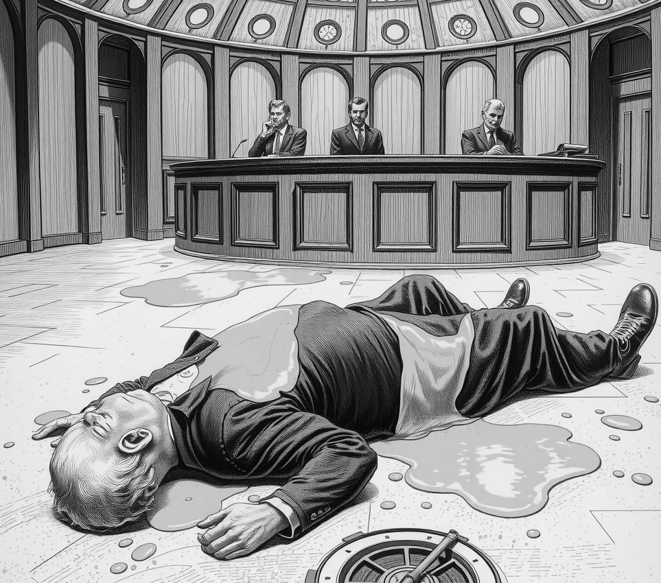

Tycho Rim . 22 November 3707

Former Mayor Toby Haze, who governed Tycho Rim for thirty years by constantly spilling soup on his shoes, died on Monday. He was eighty-four.
Haze rose from airlock technician to district mayor on a platform of pure awkwardness. While upper-dome politicians spoke with sleek grace, Haze dropped his voting wands, tripped over door sills, and tangled his jacket in air valves during speeches. Voters trusted a man who could not manage his own sleeves. He won six straight elections.
His career ended during his seventh campaign. A leaked recording revealed that his famous clumsiness was choreographed by top decorum consultants from the upper gardens.
The tapes showed Haze rehearsing a trip over a power line for forty minutes. His coaches corrected his posture whenever he fell too gracefully.
"A poor man falls with his elbows tucked," said his lead coach, Kaelen Voss. "Toby kept landing like a dancer, so we had to break his poise."
Public trust collapsed instantly. Citizens forgave his budget deficits, but they could not forgive his hidden elegance. In his final election, voters rejected him for a logistics clerk who had never once dropped a spoon.
Haze spent his final years indoors. Neighbours reported that he walked with a crisp, perfect stride that everyone found deeply offensive. His memorial service will be held in the lower basin. Attendees are asked to walk carefully.